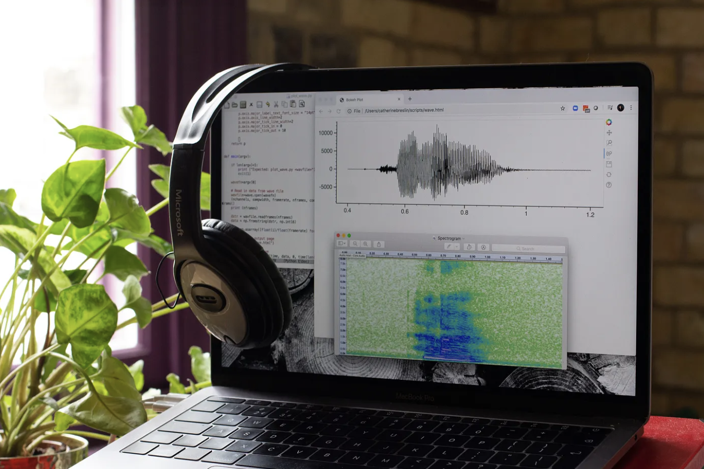
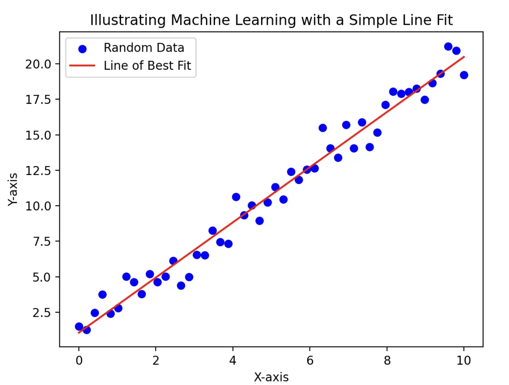
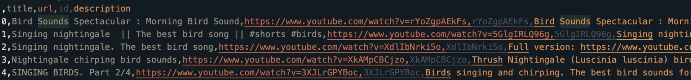
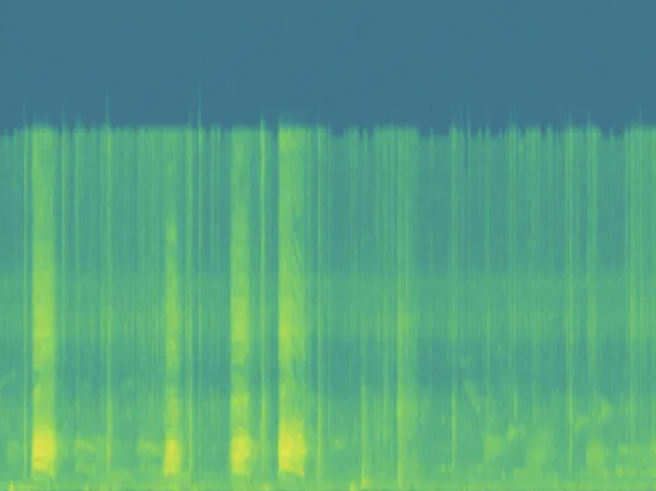
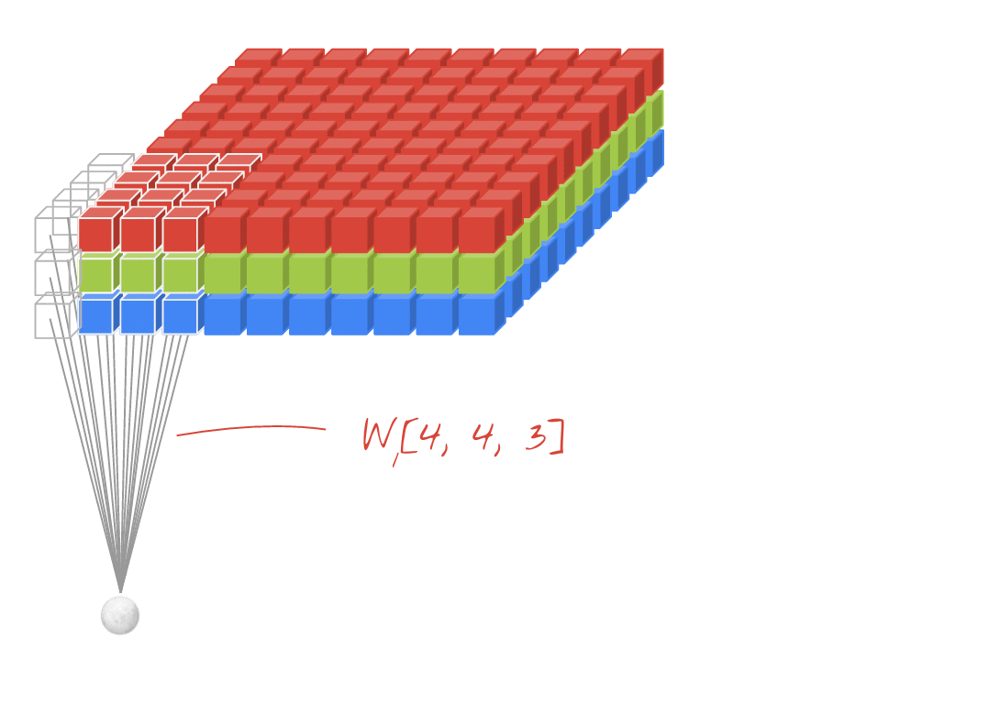
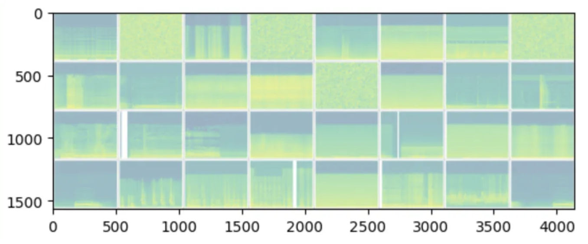

This post is based on an article I originally published on Medium — Using Python to classify sounds (A Deep Learning approach).
Classifying audio is no easy task, if you found this article you probably have experience in programming in Python but you may be stuck wondering how to even get started.
This article demystifies the process of audio classification using Python and PyTorch, drawing on my experiences from a graduation project I worked on.

Photo by Catherine Breslin on Unsplash
Understanding the Challenge
First you have to consider what problem you are trying to solve :
- Are you trying to detect a single sound among others in an environment ? Or are you trying to classify multiple sounds ?
- How noisy will the environment be ? What others sounds will reach the microphone ?
We must know this in order to choose our approach. If there are only 2 types of sounds in a specific environment with no other sounds (which is very unlikely), then you may simply use frequency analysis / volume threshold to solve your problem without the need for this tutorial.
However, in most case simple sounds characteristic such as volume or average decibels are not enough; Suppose you want to detect the sound of a chainsaw in a forest, what happen if there are loud bird nearby, a thunderstorm or hiker making noise ? False alert may be triggered by sound with similar characteristics.
That’s why we will rely on Machine Learning.
Machine Learning is what allows use to find unique characteristic of each sound we want to classify, a task that would be tremendously hard with standard programming method.
What is Machine Learning ?
Feel free to skip this section if you have some ML background.
Machine learning is essentially making a computer generalize over data to make predictions. This can be done using linear regression for a simple problem like fitting a curve to some data (image below).

However, for more complex scenarios where the relationships between data points aren’t as straightforward, we turn to Artificial Neural Networks (ANNs).
ANNs are capable of learning and modeling more intricate patterns, thanks to their structure of interconnected nodes that mimic the biological neurons.
By feeding enough data (represented by the blue dots), the model, depicted as the red curve, adjusts itself during the training process. This trained model can then be used for making predictions, a phase known as inference.
Whenever you’re trying to predict future sell of a business or classifying dogs and cats images the idea is the same : with enough data neural networks can (usually) generalize over any problem.”
Complex problem like classifying images (or audio) are like fitting a curve to some points of data, but in very high-dimensional space.
I won’t dive into the details of how neural network work, but most problem past fitting a linear curve require having a neural networks with various hidden neurons (neurons that are neither input or output). This is a sub-set of Machine Learning called Deep Learning.
This was a very quick overview, if you know nothing about Deep Learning I would strongly advice you to spend some more time learning. I can highly recommend this video for some math explaination of how neural network learn and this course by Lex Fridman .
Finding Data
Training a neural network require lots of data. In audio classification we need many audio samples for each of the class we will classify.
Where do we find this data ?
- First check on Github, Kaggle and Hugging Face, maybe someone already made a dataset that contain the class you want to classify.
- Checkout the UrbanSound8k dataset, it probably fit most sound classification needs.
- Google has a website that index YouTube video into category for different class of sounds : google audioset However this website provide limited value, as I will explain.
- The alternative to Google Audioset could be to search and download sounds on YouTube, this can be done using YouTube API and YouTube to mp3 in Python.
If you can’t find a dataset that fit your needs, you probably need to read what follow.
Google AudioSet doesn’t provide the audio tracks of videos for download, instead if you navigate to the download page you will find CSV containing every labeled videos, each line contain the timestamp (start_time,end_time) followed by an encoded label (something like “m/01j4z9”) this tell us which sound appear at the timestamp, the readable label / encoded label relationship can be found here.
Google don’t provide us with zip files of sounds to download, as this would violate their YouTube policy.
The CSV provided by Google contain very few sound of a specific category, searching for “m/01j4z9” (chainsaw label) we find that the label appear only 2 times, for a total of 20 seconds of data.
Also the labeling isn’t very specific : The “gunshot” label contain machine guns sound, what if we only want to collect single shot sound ?
That is why you might want to use YouTube API to search for sounds, here is an overview of how you could do it :
YOUTUBE_API_SERVICE_NAME = 'youtube'
YOUTUBE_API_VERSION = 'v3'
DEVELOPER_KEY = 'xxx'
RESULT_PER_QUERY = 150
VIDEO_PER_PAGE = 50
from googleapiclient.discovery import build
def choose_video(result):
choosen = []
for item in result['items']:
descr = item['snippet']['description'].lower()
title = item['snippet']['title'].lower()
if not 'videoId' in item['id']:
continue
if not item['id']['kind'] == 'youtube#video':
continue
# do more check for duration and other infos, see youtube API docs
# check descr and title words, you could exclude some keyword
choosen.append(item)
return choosen
def get_youtube_results(query):
youtube = build(YOUTUBE_API_SERVICE_NAME, YOUTUBE_API_VERSION,
developerKey=DEVELOPER_KEY)
next_page_token = None
all_results = []
while len(all_results) < RESULT_PER_QUERY:
result = youtube.search().list(
q=query,
part='id,snippet',
maxResults=VIDEO_PER_PAGE,
pageToken=next_page_token
).execute()
choices = choose_video(result)
all_results.extend(choices)
next_page_token = result.get('nextPageToken')
if not next_page_token:
break
return all_results
query = "birds sound"
results = get_youtube_results(query)
# save in CSVYou could save sounds in a CSV file, that contain various informations about each video (title, url, id, description) :

Some results will be unrelated to the query, but you implement the choose_video function as you wish, you could check if the title or description is related to the query by using, for exemple chatGPT API.
Once you have a CSV of youtube URL, you can simply use yt-dlp, a YouTube mp3 fork to download each video soundtrack and split each into samples of equal length (10 seconds is ideal), and voilà! You have a database ready to use !
One problem that arise from using YouTube to find sound is … human talk a lot! The audiotrack of a video related to “gunshot” will probably be 80% of human of human talking 10% of silence and 10% of actual gunshot. The solution is to use a voice recognition model, no need to create one, you could simply use whisper API to return the words in an audio sample, keeping only the samples with no words detected.
Sound as an image
We now have plenty of data, great but how do we train a neural network on audio data ?
Same as for cats and dogs, we feed the network with images.
How do we represent the characteristics of a sound with an image ? With a spectrogram.

A spectrogram captures the features of a sound by displaying a visual representation of how its frequency content changes over time, with brighter areas indicating higher energy or amplitude. This allows us to visualize not only the overall pitch and intensity of a sound but also subtle nuances such as harmonics.
We can iterate over sounds in our database folder and convert each sounds as spectrogram, using torchaudio converting a wav to it’s spectrogram image is trivial :
#!/usr/bin python3
import torch
import numpy as np
import torchaudio
import matplotlib.pyplot as plt
from PIL import Image
SPECTROGRAM_DPI = 90 # image quality of spectrograms
DEFAULT_SAMPLE_RATE = 44100
DEFAULT_HOPE_LENGHT = 1024
class audio():
def __init__(self, filepath_, hop_lenght = DEFAULT_HOPE_LENGHT, samples_rate = DEFAULT_SAMPLE_RATE):
self.hop_lenght = hop_lenght
self.samples_rate = samples_rate
self.waveform, self.sample_rate = torchaudio.load(filepath_)
def plot_spectrogram(self) -> None:
waveform = self.waveform.numpy()
_, axes = plt.subplots(1, 1)
axes.specgram(waveform[0], Fs=self.sample_rate)
plt.axis('off')
plt.show(block=False)
def write_disk_spectrogram(self, path, dpi=SPECTROGRAM_DPI) -> None:
self.plot_spectrogram()
plt.savefig(path, dpi=dpi, bbox_inches='tight')
input_path = "./sounds/birds/sound_1.wav"
output_path = "./images/birds/sound_1.png"
sound = audio(sound_path)
sound.write_disk_spectrogram(output_path, dpi=SPECTROGRAM_DPI)Great! Now we can implement the PyTorch code… right ?
There is one more thing we need to know.
Remember how I said “neural network can (usually) generalize over any problem.”, why usually ?
Well.. suppose you a 1024*1024 image that’s 1,048,576 pixels, that is a huge number. In a fully connected network, every pixel would be an input neuron, each neuron in one layer is connected to every neuron in the adjacent layer leading to an exponentially growing number of parameters. This makes training such networks infeasible.
The solution is to use Convolutional Neural Network (CNN).
CNN are a type of neural network which use filters to capture small regions of an input image across many layers, enabling them to capture spatial features, patterns, and learn complex visual representations, this greatly reduce the complexity of the task.
A great visualization of CNN can found at : https://poloclub.github.io/cnn-explainer/

I also recommend this CS 231 cheatsheet to learn about how CNN work before diving into any code.
Time to write some code
We can finally proceed to implement the PyTorch code that will train our Neural Network.
Make sure your dataset directory look as follow, the name of the sub-folder tell PyTorch which class are used for training.
dataset/
├── class_x
│ ├── xxx.png
│ ├── xxy.png
│ └── …
│ └── xxz.png
└── class_y
├── xxx.png
├── xxy.png
└── …
└── xxz.pngWe will first import Numpy, various PyTorch function, Matplotlib, etc…
# Import numpy library for numerical operations
import numpy as np
# Import torch library for building and training neural networks
import torch
# Import nn module from torch for building neural network layers
from torch import nn
# Import torch multiprocessing module for parallel processing
import torch.multiprocessing
# Import datasets and transforms modules from torchvision for loading and transforming image datasets
from torchvision import datasets, transforms
# Import SummaryWriter module from torch.utils.tensorboard for logging to TensorBoard
from torch.utils.tensorboard import SummaryWriter
# Import summary function from torchsummary for displaying model summary
from torchsummary import summary
# Import torchvision library for image processing
import torchvision
# Import pyplot module from matplotlib for plotting graphs
import matplotlib.pyplot as plt
# Import tqdm module for displaying progress bars
from tqdm.auto import tqdm
# Import default_timer function from timeit for measuring time taken for model training
from timeit import default_timer as timer
writer_path = 'runs/log_file_tensorboard'
# writer to log to tensorboard
writer = SummaryWriter(writer_path)We define some parameters, change according to your need.
NUM_WORKERS = 4 # number of worker used when loading data into dataloader
DATASET_PATH = '../database/images/' # path of our spectrogram dataset
IMAGE_SIZE = (1024, 1024) # image size
CHANNEL_COUNT = 3 # 3 channel as an image has 3 color (R,G,B)
ATTRIBUTION = ["dog", "bird", "car"] # class labels exemple, we'll have 3 class in this exemple
ACCURACY_THRESHOLD = 90 # accuracy at which to stopWe now load the dataset and separate our dataset into training and test data, separating our dataset into training and validation set allow us know whenever our model is under-fitting or over-fitting the data.
We won’t use advanced data transformations in this exemple, as applying transformations on audio data (adding noise, pitch shifting, time stretching) can improve but also worsen the training result if not used correctly, you should probably start with no data transformation, then play with some of torchaudio.transforms module transform. Try to opt for more data when possible instead of relying on made-up data.
# Define the data transformation, we will only use it to transform the image as tensor
# adding noise, pitch shifting, time stretching are valid transformations that we you could use
# see https://pytorch.org/audio/stable/transforms.html
transform=transforms.ToTensor()
# Load the dataset
print(f"Loading images from dataset at {DATASET_PATH}")
dataset = datasets.ImageFolder(DATASET_PATH, transform=transform)
# train / test split
val_ratio = 0.2
val_size = int(val_ratio * len(dataset))
train_size = len(dataset) - val_size
train_dataset, val_dataset = torch.utils.data.random_split(dataset, [train_size, val_size])
print(f"{train_size} images for training, {val_size} images for validation")Let’s declare some helper functions to visualize the data.
"""
Display a spectrogram image
@param img: Spectrogram of sound
@param one_channel: Whenever image is grey or has color (RGB)
"""
def image_display_spectrogram(img, one_channel=False):
if one_channel:
img = img.mean(dim=0)
img = img / 2 + 0.5 # unnormalize
npimg = img.numpy()
if one_channel:
plt.imshow(npimg, cmap="Greys")
else:
plt.imshow(np.transpose(npimg, (1, 2, 0)))
"""
Display all the spectrogram of sounds within a batch
@param batches: Batch of data from a dataloader
"""
def batches_display(batches, writer_path):
dataiter = iter(batches)
images, _ = next(dataiter)
# create grid of images
img_grid = torchvision.utils.make_grid(images)
# show images
image_display_spectrogram(img_grid, one_channel=False)
# write to tensorboard
writer.add_image(writer_path, img_grid)We will now load the validation and training data respectively using 2 DataLoader.
batch_size = 16
# Load training dataset into batches
train_batches = torch.utils.data.DataLoader(train_dataset,
batch_size=batch_size,
shuffle=True,
num_workers=NUM_WORKERS)
# Load validation dataset into batches
val_batches = torch.utils.data.DataLoader(val_dataset,
batch_size=batch_size*2,
num_workers=NUM_WORKERS)
# display 32 (batch_size*2) sample from the first validation batch
batches_display(val_batches, writer_path=writer_path)
Let’s declare what our CNN architecture. I strongly encourage reading this PyTorch tutorial before you dive into understanding what’s going here.
We make use of the following layers :
- Convolution layer (CONV) nn.Conv2d
- Pooling (POOL) nn.MaxPool2D
- Fully Connected (FC) nn.Flatten
- Rectified Linear Unit (RELU) nn.ReLU
The first CONV layer will capture the first 3 channel of the image (Red, Green, Blue), that’s why the first layer “nn.Conv2d(3, 16, kernel_size=3, stride=2, padding=1)” start with a 3 for the number of input_layer, followed by the number of output_features to capture (16), the next layer will capture those 16 layer and so on… again you can learn about CNN
here
This architecture is the result of an iterative process, as there is no magic formula to know how many layers will be needed for a specific problems.
# Define a neural network class that inherits from PyTorch nn.Module.
class neuralNetworkV1(nn.Module):
# The __init__ method is used to declare the layers that will be used in the forward pass.
def __init__(self):
super().__init__() # required because our class inherit from nn.Module
# First convolutional layer with 3 input channels for RGB images, 16 outputs (filters).
self.conv1 = nn.Conv2d(3, 16, kernel_size=3, stride=2, padding=1)
# Second convolutional layer with 16 input channels to capture features from the previous layer, 16 outputs (filters).
self.conv2 = nn.Conv2d(16, 16, kernel_size=3, stride=2, padding=1)
# Third and fourth convolutional layers with 16 and 10 output channels respectively.
self.conv3 = nn.Conv2d(16, 10, kernel_size=3, stride=2, padding=1)
self.conv4 = nn.Conv2d(10, 10, kernel_size=3, stride=2, padding=1)
# Max pooling layer to reduce feature complexity.
self.pooling = nn.MaxPool2d(kernel_size=(2, 2), stride=(2, 2))
# ReLU activation function for introducing non-linearity.
self.relu = nn.ReLU()
# Flatten the 2D output from the convolutional layers for the fully connected layer.
self.flatten = nn.Flatten()
# Fully connected layer connecting to 1D neurons, with 3 output features for 3 classes.
self.linear = nn.Linear(in_features=480, out_features=3)
# define how each data sample will propagate in each layer of the network
def forward(self, x: torch.Tensor):
x = self.relu(self.conv1(x))
x = self.relu(self.conv2(x))
x = self.pooling(x)
x = self.relu(self.conv3(x))
x = self.pooling(x)
x = self.relu(self.conv4(x))
x = self.flatten(x)
try:
x = self.linear(x)
except Exception as e:
print(f"Error : Linear block should take support shape of {x.shape} for in_features.")
return x
our_model = neuralNetworkV1()
print("Model summary : ")
print(summary(our_model, (CHANNEL_COUNT, IMAGE_SIZE[0], IMAGE_SIZE[1])))Model summary :
----------------------------------------------------------------
Layer (type) Output Shape Param #
================================================================
Conv2d-1 [-1, 16, 195, 258] 448
ReLU-2 [-1, 16, 195, 258] 0
Conv2d-3 [-1, 16, 98, 129] 2,320
ReLU-4 [-1, 16, 98, 129] 0
MaxPool2d-5 [-1, 16, 49, 64] 0
Conv2d-6 [-1, 10, 25, 32] 1,450
ReLU-7 [-1, 10, 25, 32] 0
MaxPool2d-8 [-1, 10, 12, 16] 0
Conv2d-9 [-1, 10, 6, 8] 910
ReLU-10 [-1, 10, 6, 8] 0
Flatten-11 [-1, 480] 0
Linear-12 [-1, 2] 962
================================================================
Total params: 6,090
Trainable params: 6,090
Non-trainable params: 0
----------------------------------------------------------------
Input size (MB): 2.29
Forward/backward pass size (MB): 15.90
Params size (MB): 0.02
Estimated Total Size (MB): 18.22
----------------------------------------------------------------More helper functions, for displaying informations while the network is training.
# display total time training
def display_training_time(start, end):
total_time = end - start
print(f"Training time : {total_time:.3f} seconds")
return total_time
# Display training infos for each epochs
def display_training_infos(epoch, val_loss, train_loss, accuracy):
val_loss = round(val_loss.item(), 2)
train_loss = round(train_loss.item(), 2)
accuracy = round(accuracy, 2)
print(f"Epoch : {epoch}, Training loss : {train_loss}, Validation loss : {val_loss}, Accuracy : {accuracy} %")
# display total time training
def display_training_time(start, end):
total_time = end - start
print(f"Training time : {total_time:.3f} seconds")
return total_time
# Display training infos for each epochs
def display_training_infos(epoch, val_loss, train_loss, accuracy):
val_loss = round(val_loss.item(), 2)
train_loss = round(train_loss.item(), 2)
accuracy = round(accuracy, 2)
print(f"Epoch : {epoch}, Training loss : {train_loss}, Validation loss : {val_loss}, Accuracy : {accuracy} %")